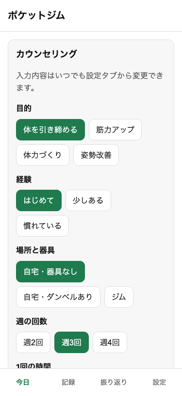
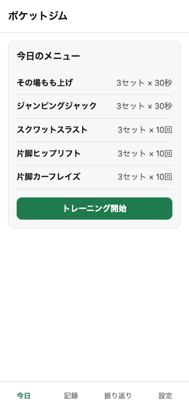
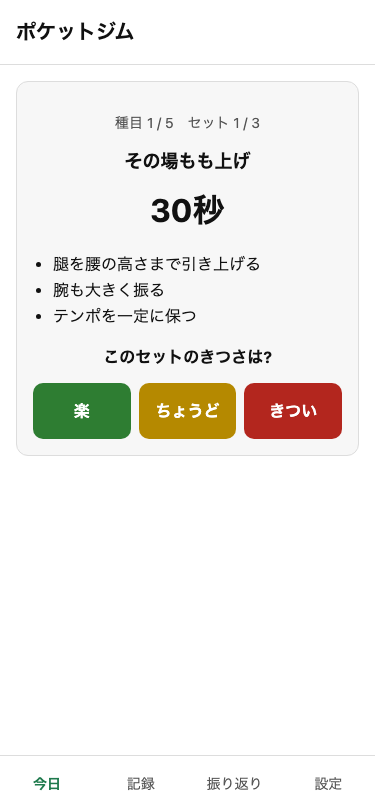
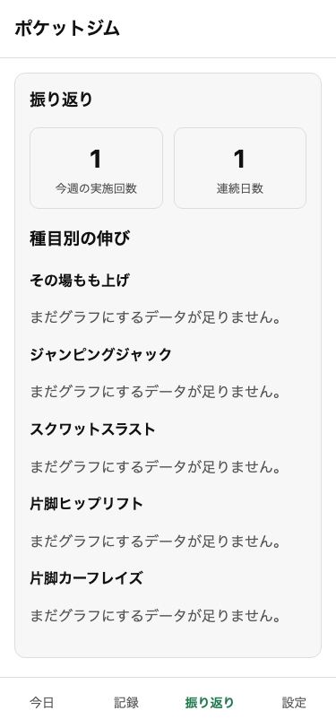

初回カウンセリング
目的・体力・使える時間を最初に聞くだけ。難しい設定は不要。
10.15
パーソナルジムに行かなくても、
ポケットにジムを。
ポケットジム 仮称・OSS・無料
いつも頑張ってるすずへ。運動を続けたいけど、パーソナルジムに毎回通うのは大変だから、携帯だけで完結するジムを作ってみた。
最初に目的や使える時間を答えると、その日のメニューが出てくる。やってみて「楽／ちょうど／きつい」を記録すると、次は自動で回数を調整してくれるようになってる。
データは全部この携帯の中だけに残るから、誰にも送られない。気が向いたときに、少しずつ使ってみてね。

目的・体力・使える時間を最初に聞くだけ。難しい設定は不要。

その日の調子に合わせて、無理のないメニューを自動で組んでくれる。

種目と種目のあいだの休憩をタイマーが計ってくれるから、迷わず続けられる。

きつさを記録すると次回のメニューに反映。グラフでこれまでの積み重ねが見える。
ポケットジムはオープンソースで公開している。種目のバリエーションはみんなで追加していける。
github.com/Ryoseiimai/pocket-gym
10/15の誕生日に向けて、毎日みんなの意見で改善中です（完成版は 10/15 Claude Build Night でお披露目）。
GitHub Discussions で意見・アイデア・OSS初心者への教訓を、 Issue でバグ報告や種目追加のリクエストを募集しています。